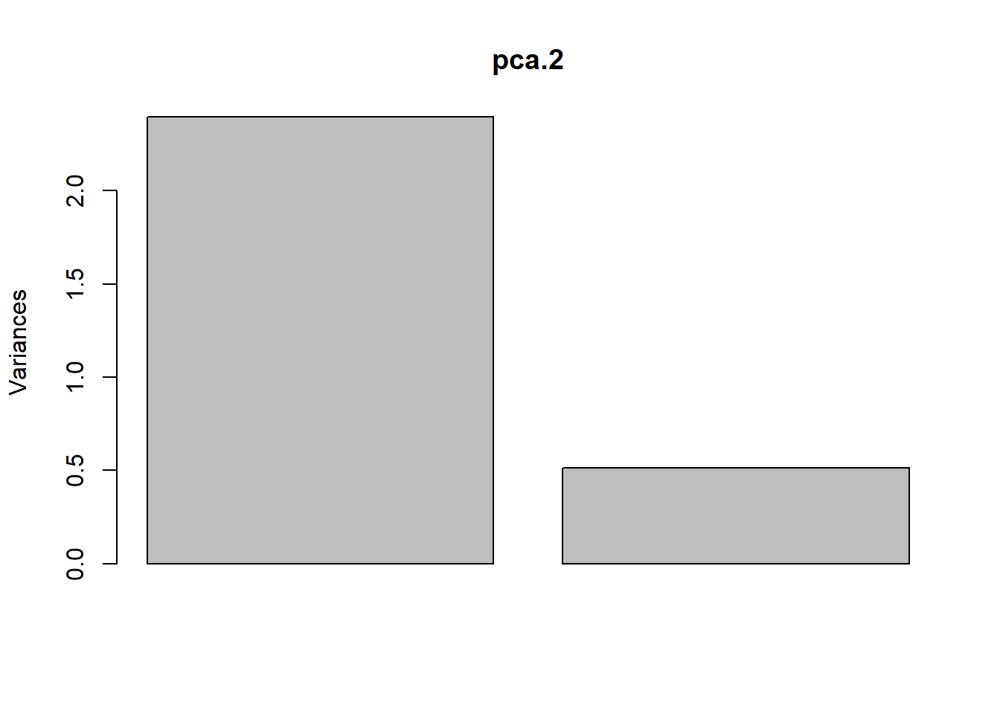

Stat6: Demo
Ordinationen I
PCA
if(!require(labdsv)){install.packages("labdsv")}Error in contrib.url(repos, "source"): versuche CRAN ohne einen Spiegelserver zu nutzenlibrary(labdsv)Error in library(labdsv): es gibt kein Paket namens 'labdsv'# Für Ordinationen benötigen wir Matrizen, nicht Data.frames
# Generieren von Daten
raw <- matrix(c(1, 2, 2.5, 2.5, 1, 0.5, 0, 1, 2, 4, 3, 1), nrow = 6)
colnames(raw) <- c("spec.1", "spec.2")
rownames(raw) <- c("r1", "r2", "r3", "r4", "r5", "r6")
raw spec.1 spec.2
r1 1.0 0
r2 2.0 1
r3 2.5 2
r4 2.5 4
r5 1.0 3
r6 0.5 1# Originale Daten im zweidimensionalen Raum
x1 <- raw[,1]
y1 <- raw[,2]
z <- c(rep(1:6))
# Plot Abhängigkeit der Arten vom Umweltgradienten
plot(c(x1, y1)~c(z, z), type = "n", axes = T, bty = "l",
las = 1, xlim = c(1,6), ylim = c(0,5),
xlab = "Umweltgradient", ylab = "Deckung der Arten")
points(x1~z, pch = 21, type = "b")
points(y1~z, pch = 16, type = "b")
# zentrierte Daten
cent <- scale(raw, scale = F)
x2 <- cent[,1]
y2 <- cent[,2]
# rotierte Daten
o.pca <- pca(raw)Error in pca(raw): konnte Funktion "pca" nicht findenx3 <- o.pca$scores[,1]Error in eval(expr, envir, enclos): Objekt 'o.pca' nicht gefundeny3 <- o.pca$scores[,2]Error in eval(expr, envir, enclos): Objekt 'o.pca' nicht gefunden# Visualisierung der Schritte im Ordinationsraum
plot(c(y1, y2, y3)~c(x1, x2, x3), type = "n", axes = T, bty = "l", las = 1,
xlim = c(-4, 4), ylim = c(-4, 4), xlab = "Art 1", ylab= "Art 2")Error in eval(predvars, data, env): Objekt 'y3' nicht gefundenpoints(y1~x1, pch = 21, type = "b", col = "green", lwd = 2)
points(y2~x2, pch = 16, type = "b",col = "red", lwd = 2)
points(y3~x3, pch = 17, type = "b", col = "blue", lwd = 2)Error in eval(predvars, data, env): Objekt 'y3' nicht gefunden# Durchführung der PCA
o.pca <- pca(raw)Error in pca(raw): konnte Funktion "pca" nicht finden# Koordinaten im Ordinationsraum
o.pca$scoresError in eval(expr, envir, enclos): Objekt 'o.pca' nicht gefunden# Korrelationen der Variablen mit den Ordinationsachsen
o.pca$loadingsError in eval(expr, envir, enclos): Objekt 'o.pca' nicht gefunden#Erklärte Varianz der Achsen
E <- o.pca$sdev^2 / o.pca$totdev * 100Error in eval(expr, envir, enclos): Objekt 'o.pca' nicht gefundenEError in eval(expr, envir, enclos): Objekt 'E' nicht gefunden# mit prcomp
pca.2 <- prcomp(raw, scale = F)
summary(pca.2)Importance of components:
PC1 PC2
Standard deviation 1.548 0.7154
Proportion of Variance 0.824 0.1760
Cumulative Proportion 0.824 1.0000plot(pca.2)
biplot(pca.2)
# mit vegan
if(!require(vegan)){install.packages("vegan")}Error in contrib.url(repos, "source"): versuche CRAN ohne einen Spiegelserver zu nutzenlibrary("vegan")Error in library("vegan"): es gibt kein Paket namens 'vegan'# Die Funktion rda führt ein PCA aus an wenn nicht Artdaten UND Umweltdaten definiert werden
pca.3 <- rda(raw, scale = FALSE)Error in rda(raw, scale = FALSE): konnte Funktion "rda" nicht finden#scores(pca.3, display = c("sites"))
#scores(pca.3, display = c("species"))
summary(pca.3, axes = 0)Error in summary(pca.3, axes = 0): Objekt 'pca.3' nicht gefundenbiplot(pca.3)Error in biplot(pca.3): Objekt 'pca.3' nicht gefunden# Mit Beispieldaten aus Wildi
if(!require(dave)){install.packages("dave")}Error in contrib.url(repos, "source"): versuche CRAN ohne einen Spiegelserver zu nutzenlibrary(dave)Error in library(dave): es gibt kein Paket namens 'dave'data(sveg)


str(sveg)
summary(sveg)
names(sveg)# PCA: Deckungen Wurzeltransformiert, cor=T erzwingt Nutzung der Korrelationsmatrix
pca.5 <- pca(sveg^0.25, cor = T)Error in pca(sveg^0.25, cor = T): konnte Funktion "pca" nicht finden# Koordinaten im Ordinationsraum
pca.5$scores
# Korrelationen der Variablen mit den Ordinationsachsen
pca.5$loadings# Erklärte Varianz der Achsen in Prozent (sdev ist die Wurzel daraus)
E <- pca.5$sdev^2 / pca.5$totdev * 100Error in eval(expr, envir, enclos): Objekt 'pca.5' nicht gefundenEError in eval(expr, envir, enclos): Objekt 'E' nicht gefundenE[1:5]Error in eval(expr, envir, enclos): Objekt 'E' nicht gefunden# PCA-Plot der Lage der Beobachtungen im Ordinationsraum
plot(pca.5$scores[,1], pca.5$scores[,2], type = "n", asp = 1, xlab = "PC1", ylab = "PC2")Error in plot(pca.5$scores[, 1], pca.5$scores[, 2], type = "n", asp = 1, : Objekt 'pca.5' nicht gefundenpoints(pca.5$scores[,1], pca.5$scores[,2], pch = 18)Error in points(pca.5$scores[, 1], pca.5$scores[, 2], pch = 18): Objekt 'pca.5' nicht gefunden# Subjektive Auswahl von Arten zur Darstellung
sel.sp <- c(3, 11, 23, 39, 46, 72, 77, 96)
snames <- names(sveg[,sel.sp])Error in eval(expr, envir, enclos): Objekt 'sveg' nicht gefundensnamesError in eval(expr, envir, enclos): Objekt 'snames' nicht gefunden# PCA-Plot der Korrelationen der Variablen (hier Arten) mit den Achsen (h)
x <- pca.5$loadings[,1]Error in eval(expr, envir, enclos): Objekt 'pca.5' nicht gefundeny <- pca.5$loadings[,2]Error in eval(expr, envir, enclos): Objekt 'pca.5' nicht gefundenplot(x, y, type = "n", asp = 1)Error in plot(x, y, type = "n", asp = 1): Objekt 'x' nicht gefundenarrows(0,0, x[sel.sp], y[sel.sp], length = 0.08)Error in arrows(0, 0, x[sel.sp], y[sel.sp], length = 0.08): Objekt 'x' nicht gefundentext(x[sel.sp], y[sel.sp], snames, pos = 1, cex = 0.6)Error in text(x[sel.sp], y[sel.sp], snames, pos = 1, cex = 0.6): Objekt 'x' nicht gefunden# Mit vegan
pca.6 <- rda(sveg^0.25, scale = TRUE)Error in rda(sveg^0.25, scale = TRUE): konnte Funktion "rda" nicht finden# Erklärte Varianz der Achsen
summary(pca.6, axes = 0)Error in summary(pca.6, axes = 0): Objekt 'pca.6' nicht gefunden# PCA-Plot der Lage der Beobachtungen im Ordinationsraum
biplot(pca.6, display = "sites", type = "points", scaling = 1)Error in biplot(pca.6, display = "sites", type = "points", scaling = 1): Objekt 'pca.6' nicht gefunden# Subjektive Auswahl von Arten zur Darstellung
sel.sp <- c(3, 11, 23, 39, 46, 72, 77, 96)
snames <- names(sveg[,sel.sp])Error in eval(expr, envir, enclos): Objekt 'sveg' nicht gefundensnamesError in eval(expr, envir, enclos): Objekt 'snames' nicht gefunden# PCA-Plot der Korrelationen der Variablen (hier Arten) mit den Achsen (h)
scores <- scores(pca.6, display = "species")Error in scores(pca.6, display = "species"): konnte Funktion "scores" nicht findenx <- scores[,1]Error in eval(expr, envir, enclos): Objekt 'scores' nicht gefundeny <- scores[,2]Error in eval(expr, envir, enclos): Objekt 'scores' nicht gefundenplot(x, y, type = "n", asp = 1)Error in plot(x, y, type = "n", asp = 1): Objekt 'x' nicht gefundenarrows(0,0, x[sel.sp], y[sel.sp], length = 0.08)Error in arrows(0, 0, x[sel.sp], y[sel.sp], length = 0.08): Objekt 'x' nicht gefundentext(x[sel.sp], y[sel.sp], snames, pos = 1, cex = 0.6)Error in text(x[sel.sp], y[sel.sp], snames, pos = 1, cex = 0.6): Objekt 'x' nicht gefunden# Mit angepassten Achsen
plot(x, y, type = "n", asp = 1, xlim = c(-1, 1), ylim = c(-0.6, 0.6))Error in plot(x, y, type = "n", asp = 1, xlim = c(-1, 1), ylim = c(-0.6, : Objekt 'x' nicht gefundenarrows(0,0, x[sel.sp], y[sel.sp], length = 0.08)Error in arrows(0, 0, x[sel.sp], y[sel.sp], length = 0.08): Objekt 'x' nicht gefundentext(x[sel.sp], y[sel.sp], snames, pos = 1, cex = 0.6)Error in text(x[sel.sp], y[sel.sp], snames, pos = 1, cex = 0.6): Objekt 'x' nicht gefundenCA
ca.1 <- cca(sveg^0.5)Error in cca(sveg^0.5): konnte Funktion "cca" nicht finden# Arten (o) und Communities (+) plotten
plot(ca.1)Error in plot(ca.1): Objekt 'ca.1' nicht gefunden# Nur Arten plotten
plot(ca.1, display = "species", type = "points")Error in plot(ca.1, display = "species", type = "points"): Objekt 'ca.1' nicht gefunden# Anteilige Varianz, die durch die ersten beiden Achsen erklärt wird
ca.1$CA$eig[1:2] / sum(ca.1$CA$eig)Error in eval(expr, envir, enclos): Objekt 'ca.1' nicht gefundensummary(eigenvals(ca.1))Error in eigenvals(ca.1): konnte Funktion "eigenvals" nicht findenDCA
library(vegan)Error in library(vegan): es gibt kein Paket namens 'vegan'dca.1 <- decorana(sveg, mk = 10)Error in decorana(sveg, mk = 10): konnte Funktion "decorana" nicht findenplot(dca.1, display = "sites", type = "point")Error in plot(dca.1, display = "sites", type = "point"): Objekt 'dca.1' nicht gefundendca.2 <- decorana(sveg, mk = 100)Error in decorana(sveg, mk = 100): konnte Funktion "decorana" nicht findenplot(dca.2, display = "sites", type = "point")Error in plot(dca.2, display = "sites", type = "point"): Objekt 'dca.2' nicht gefundenNMDS
# Distanzmatrix als Start erzeugen
mde <- vegdist(sveg, method = "euclidean")Error in vegdist(sveg, method = "euclidean"): konnte Funktion "vegdist" nicht finden# Alternative mit einem für Vegetationsdaten häufig verwendeten Dissimilarity-index
mde <- vegdist(sveg, method = "bray")Error in vegdist(sveg, method = "bray"): konnte Funktion "vegdist" nicht finden#Z wei verschiedene NMDS-Methoden
if(!require(MASS)){install.packages("MASS")}
library(MASS)
set.seed(1) # macht man, wenn man bei einer Wiederholung exakt die gleichen Ergebnisse will
imds <- isoMDS(mde, k = 2)Error in isoMDS(mde, k = 2): Objekt 'mde' nicht gefundenset.seed(1)
mmds <- metaMDS(mde, k = 2)Error in metaMDS(mde, k = 2): konnte Funktion "metaMDS" nicht findenplot(imds$points)Error in plot(imds$points): Objekt 'imds' nicht gefundenplot(mmds$points)Error in plot(mmds$points): Objekt 'mmds' nicht gefunden#Stress = S² = Abweichung der zweidimensionalen NMDS-Lösung von der originalen Distanzmatrix
stressplot(imds, mde)Error in stressplot(imds, mde): konnte Funktion "stressplot" nicht findenstressplot(mmds, mde)Error in stressplot(mmds, mde): konnte Funktion "stressplot" nicht finden